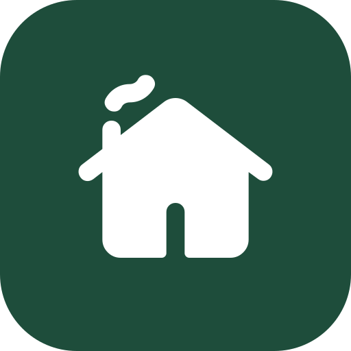
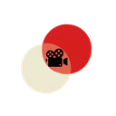

Education
University of Zurich (UZH)Zurich
-
BSc Computer Science
2024 – 2027Major: Business InformaticsMinor: Software Systems
Languages
Experience
Hamilton Medical AGBonaduz
-
Working Student
Oct 2026 – Present -
Software Engineer Intern
Jun – Sep 2026
UPGREAT AGFehraltorf
-
Research Intern
Apr – Jul 2024
Projects

Collabitat
Installable web app for flatshares: shared expenses and settling up, rotating chores, and a weekly meal plan whose shopping list turns into a shared expense at checkout.
TypeScript
React
Node.js
PostgreSQL
Docker

Movieblendr
Movie recommendation engine that helps groups find films they'll all enjoy. Analyzes user preferences from Letterboxd data using graph-based algorithms and MovieLens training data.
Python
Java
JavaScript
React